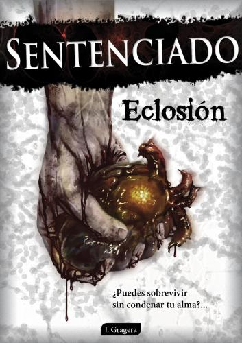

Descargas



* más info pinchando sobre cada personaje.
El virus artificial creado por los laboratorios Eternal Lab es el resultado del trabajo coordinado de algunos de los mejores científicos y especialistas del planeta. Se trata de un patógeno letal, autosuficiente y cambiante cuyas verdaderas capacidades aún están por descubrir.
El virus es mortal en humanos y se contagia por medio de la sangre o la saliva. Una vez producida la infección, un sujeto sano muere en un periodo que varía desde unas pocas horas a un máximo de tres días, dependiendo de su constitución, edad, estado de salud y gravedad de sus heridas. En el momento en el que se produce el fallecimiento, el cuerpo vuelve a alzarse en unos pocos minutos impulsado por un ansia irracional de alimentarse de la carne de los vivos.
El cerebro de un infectado, una vez fallecido, no tiene ninguna capacidad de raciocinio. Únicamente algunos especímenes conservan un ápice de memoria que les impulsa a realizar algunas tareas rutinarias que tenían en vida, como volver a casa, acudir a sus puestos de trabajo o sentarse frente a la televisión. Privados de cualquier estímulo, algunos ejemplares llegaron incluso a mostrar ciertas tendencias artísticas. Destruir el cerebro es la única manera de terminar definitivamente con un muerto viviente.
Los sentidos permanecen intactos siempre y cuando los órganos correspondientes no estén dañados. Las últimas investigaciones de Eternal Lab revelaron una capacidad innata de los especímenes para diferenciar a los vivos de los muertos, probablemente mediante un olfato hiperdesarrollado o una mutación post-mortem todavía desconocida.
Los muertos vivientes conservan capacidades motrices muy similares a las que tenían antes de fallecer, especialmente en cuanto a velocidad y fuerza. Sin embargo, no sienten fatiga ni dolor, por lo que su resistencia y flexibilidad mejoran notablemente. Por otro lado, la degeneración de los tejidos les dificulta la capacidad de reacción, el equilibrio y la coordinación. Esto, unido a los habituales daños musculares sufridos en el ataque que causó la infección, hace que sus movimientos, aunque rápidos y decididos, puedan resultar algo torpes.

Fui mordido por un zombi a temprana edad, por culpa de lo cual estos seres llevan poblando mis pesadillas desde entonces. Más tarde me convertí en Técnico Superior de Audiovisuales y aprendí todo lo que sé sobre escritura gracias al grupo de guionistas freelance "El Alambique de Ideas", con cuyos compañeros publiqué la recopilación de relatos cortos de terror "Las mujeres son malas" (Ed. Atlantis). Ahora busco extirpar por fin el virus de mi cuerpo escribiendo novelas de muertos vivientes.info@sagasentenciado.com

Ilustrador y diseñador gráfico. Durante su trayectoria profesional ha experimentado con diferentes horizontes digitales, lo que le ha permitido desarrollar una amplia variedad de estilos con los que adaptarse a cada proyecto e historia tratando siempre de conseguir el mejor resultado a través de los detalles. Ver ilustraciones, ricardomlqr@gmail.com

Licenciada en Periodismo, lectora empedernida y tocapelotas. Tras pasar por Hearst Magazine, Tucán Comunicación y Grupo V he decidido cambiar a los personajes del Cuore por los muertos vivientes tras comprobar que las similitudes entre ambos son extraordinarias. Asumí eso de que “mi novio es un zombie” y decidí embarcarme en la aventura en un momento en el que un virus llamado crisis también ha dejado a mi profesión “sentenciada”.

Ingeniero de Software y Diseñador Web. Atraído siempre por la innovación y la simplicidad. Interesado especialmente en plasmar la verdadera identidad que los clientes tratan de comunicar con sus productos. Huye de la idea estereotipada de que todo programador escribe sus líneas acompañado de litros de café, añadiendo una excelente música de fondo a la ecuación. guillermo.herrero.i@gmail.com
El hambre, el frío y la falta de comodidades no son cosas que Adrián vaya a echar de menos, porque lleva quince años viviendo en la calle. Lo realmente duro para él es tener que convivir y preocuparse por personas que, antes de la Eclosión, ni siquiera le habrían dedicado una mirada de compasión. Tampoco él busca su aprobación. Todas sus habilidades sociales murieron junto con su dignidad y su sensibilidad el día que empezó a mendigar. Adrián es un hombre de carácter duro, seco, al que sólo le preocupan tres cosas: el alcohol, su perro y su vida. Lo demás es prescindible y circunstancial.

El Qiyamah no ha resultado ser lo que Ahmed esperaba. ¿Son los nuevos muertos aquellos que no vivieron respetando la Sahada? El destino de las personas parecía completamente arbitrario, nadie a su alrededor era merecedor de la Salvación pero, no obstante, la obra de Allah era perfecta. No es fácil tener fe en un mundo que se destruye y Ahmed nunca ha sido un radical fanático, sólo un Imán, un guía espiritual para otros musulmanes. Un hombre comprensivo, dialogante y con una gran capacidad de oratoria que ahora se encuentra perdido. Puede que en sus manos esté reconducir a la Humanidad por el buen camino, puede que eso sea lo que Allah quiere de él.
Aurore es una adolescente acostumbrada a reinventarse para adaptarse a los continuos cambios que ha padecido durante toda su vida, mutando su personalidad y sus gustos con el objetivo de encajar allí donde fuera. Quizás por eso no se fía de las apariencias, porque sabe que la gente puede fingir ser lo que no es. Es inteligente, observadore y valiente. Sola y encerrada en el bloque de pisos en el que vivía tendrá que reinventarse por última vez y convertirse en una superviviente.
Sentido común y paciencia no son dos cualidades que suelan darse en una persona que ha dedicado su vida al tráfico de armas, drogas y personas, pero quizás por eso Ben llegó tan lejos en la jerarquía criminal habiendo empezado como un “don nadie”. Combinar el instinto y saber qué paso dar en cada momento es lo que siempre le ha mantenido vivo, incluso cuando terminó ingresando en la cárcel después de realizar una matanza en un centro comercial. Después de la Eclosión, pese a haber conseguido su libertad, ha comprendido que ya nada es tal y como lo conocía. Los muertos no se dejan intimidar y los vivos ya no son un objetivo del que sacar beneficio, sino sus compañeros de fatigas. Si quiere sobrevivir a largo plazo, necesita la ayuda de otros.
De niño pijo a líder de supervivientes. César nunca quiso convertirse en esa persona a la que todos acuden. Nunca había tenido dotes de liderazgo, nunca nadie contó con él para nada, pero la Eclosión le cambió. Le dio una responsabilidad y algo en lo que creer: un futuro para la Humanidad. César es un chico noble y optimista, que se muestra tal y como es y dice las cosas como las piensa, porque en el pasado nunca tuvo la necesidad de mentir. Gracias a una radio militar de largo alcance se ha convertido en un símbolo de esperanza para los supervivientes que le escuchan mientras luchan por sus vidas en las calles.
Cuando a una persona le arrebatan aquello que más quiere, cuando le privan de lo que ha dado forma y sentido a su vida, no es de extrañar que esa persona pierda la cabeza. Eso es lo que le ocurrió a Clara el día que atropellaron a su hijo, dejándole en coma para, finalmente, fallecer una semana antes de la Eclosión. Por eso, Clara observó el Apocalipsis con lágrimas en los ojos, porque si los muertos se están levantando también puede hacerlo su hijo. Lo único que importa para Clara es llegar hasta él, porque cuando su pequeño abra los ojos, necesitará a su madre.
Diego ha visto cosas que poblarían las pesadillas de cualquiera y ha hecho cosas que le convertirían en el protagonista de todas ellas, al menos mientras estuvo trabajando como policía infiltrado entre criminales, asesinos y la escoria más oscura de la sociedad. Hasta que un accidente le arrebató a su hijo pequeño, le separó de su mujer y le hundió en una espiral de autodestrucción que le alejó también de su trabajo. Diego necesita una misión, un objetivo elevado para volver a ser el hombre fuerte, astuto y dispuesto a todo que fue en el pasado. La Eclosión va a brindarle la misión más importante de su vida.
Cuando Eternal Lab contactó con Emma para incorporarla a su proyecto de investigación de enfermedades degenerativas creyó que, por fin, después de tanto esfuerzo, alguien se había dado cuenta de lo brillante que era. Y así fue. El problema es que según fue ascendiendo en la jerarquía de la empresa, más turbulento y oscuro era el objetivo de sus estudios. El día que Emma intentó salir de allí, trataron de asesinarla porque sabía demasiado. Fue tan repentino que no tuvo tiempo de desarrollar a fondo la vacuna que estaba preparando para contrarrestar el virus que ella había ayudado a crear. Pero Emma es una persona tan inteligente como noble y hará lo que sea para intentar redimirse, aún después de la Eclosión. Ella es la última esperanza de la Humanidad para encontrar una cura al virus que les ha sentenciado.

Al principio Eternal Lab tenía un objetivo y Juan también. Nunca le pareció del todo bien lo que hacían, al menos la pequeña parte que él conocía, pero tenían una misión, un objetivo elevado y él sabía que, para progresar, hay que mancharse las manos. Su pragmatismo y su profesionalidad fueron las cualidades que le colocaron como mercenario en el lado oscuro de la sociedad, pero todo ha cambiado con la Eclosión y ahora los mismos que la provocaron dicen que quieren solucionarlo. Juan siempre ha tenido un precio y una moral cuestionable, pero también tiene un límite.
Es difícil mirar más allá de la melena rubia, los intensos ojos azules y las curvas de Lara, pero bajo su aspecto angelical se esconde una chica fuerte, optimista y curiosa. Lo suficientemente curiosa y optimista como para tener un objetivo tras el Apocalipsis: dar respuestas al fin del mundo. Cuando las naciones más poderosas del planeta estaban desmoronándose, Lara recibió un misterioso mensaje en los servidores del periódico en el que trabajaba. Lo firmaba "Silencio" y aseguraba saber por qué y cómo había ocurrido todo.
Raquel es de esas personas a las que dan ganas de abrazar. Una mujer inteligente, tierna, con una gran sensibilidad y con una entrega absoluta a la música y al instrumento más perfecto y precioso de todos, el violín. Su vida no fue fácil. Tuvo que trabajar muy duro, enfrentarse a su familia y sacrificarlo todo para poder dedicarse plenamente a lo que amaba. Sin embargo, todo lo que uno ha sido no importa después de la Eclosión. No está preparada para habitar en un mundo en el que la moralidad y la compasión han perdido el sentido, y en el que la muerte y la supervivencia se imponen sobre todo lo demás.